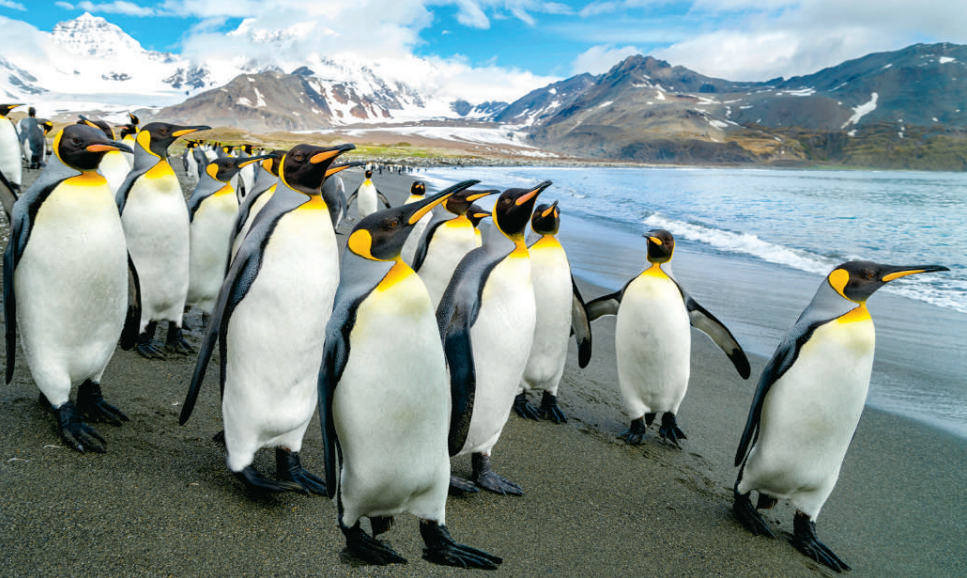
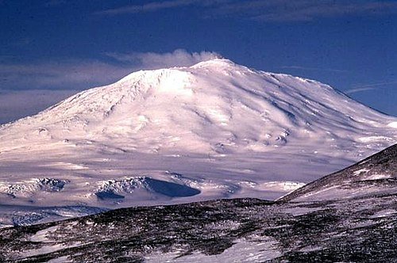
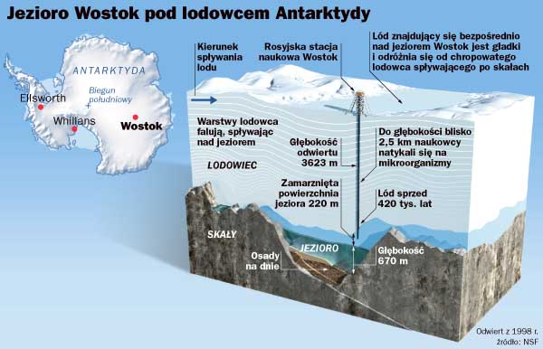

Ciekawostki o Antarktydzie
Autor: Aleksander Staszków
Wprowadzenie
Antarktyda to najzimniejszy i najbardziej odizolowany kontynent na
Ziemi, fascynujący zarówno naukowców, jak i miłośników przyrody. Pokryta
niemal w całości lodem, kryje wiele tajemnic i rekordów, które warto
poznać.
Najciekawsze fakty
-
Rekord zimna: Antarktyda jest najzimniejszym miejscem
na Ziemi. W 1983 roku na stacji Wostok odnotowano temperaturę -89,2°C.
-
Życie w ekstremalnych warunkach: Żyją tam pingwiny,
foki oraz dwa gatunki roślin kwitnących: trawa antarktyczna i goździk
antarktyczny.

Kolonia pingwinów cesarskich na lodowej równinie Antarktydy,
pokazująca ich adaptację do ekstremalnych warunków.
-
Aktywny wulkan: Mount Erebus to najbardziej na
południe położony aktywny wulkan, który erupguje kilka razy dziennie.

Wulkan Mount Erebus na Wyspie Rossa, aktywny wulkan z widocznym
kraterem i emisją gazów.
-
Jezioro Wostok: Pod 4 km lodu znajduje się największe
podlodowcowe jezioro, które może skrywać starożytne mikroorganizmy.

Schemat jeziora Wostok pod lodem, ilustrujący jego położenie i
potencjalne znaczenie naukowe.
-
Pierwsza ekspedycja: Roald Amundsen dotarł do Bieguna
Południowego w 1911 roku, wyprzedzając ekspedycję Roberta Scotta.
-
Badania naukowe: Obserwatorium Neutrino IceCube na
stacji Amundsen-Scott bada cząstki subatomowe zwane neutrinami.
-
Traktat Antarktyczny: Reguluje pokojowe wykorzystanie
kontynentu, zakazując działalności wojskowej i wydobycia surowców.
-
Dziura ozonowa: Odkryta w 1985 roku nad Antarktydą,
przyczyniła się do globalnych działań na rzecz ochrony warstwy
ozonowej.
Znaczenie Antarktydy
Antarktyda odgrywa kluczową rolę w badaniach nad zmianami klimatycznymi.
Jej lądolód zawiera 90% światowych zasobów lodu, a jego topnienie
mogłoby podnieść poziom mórz o 70 metrów. Badania prowadzone na
kontynencie pomagają lepiej zrozumieć procesy zachodzące na Ziemi i w
kosmosie.
Podsumowanie
Antarktyda to nie tylko kraina lodu, ale także miejsce niezwykłych
odkryć naukowych i unikalnego ekosystemu. Ochrona tego kontynentu jest
kluczowa dla przyszłości naszej planety.